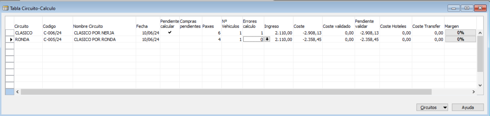
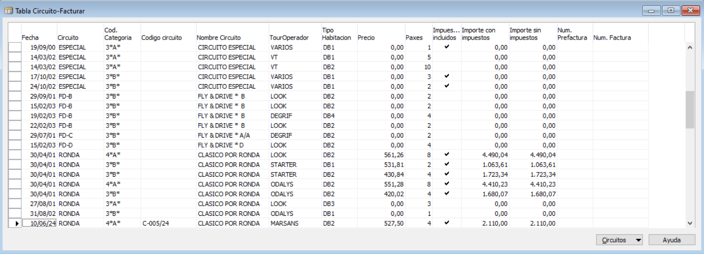
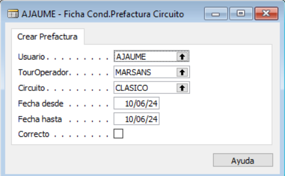

Costes e Ingresos
Calculo de circuitos
Desde el momento en que se crea una salida de un circuito el sistema nos permite lanzar el proceso de cálculo para comprobar los ingresos y costes del circuito. Para hacerlo tenemos ir a la opción Calculo del menu Circuitos.

En esta consulta tenemos varias opciones que vamos a comentar:
- Ficha, acceso a la ficha del circuito donde podemos ver todos los indicadores de las acciones que hemos comentado en Gestion circuitos.
- Prestaciones, acceso a la lista de prestaciones (servicios) asociados al circuito donde podemos hacer lo siguiente:
-
- Completar los datos de compra de lo servicios que requieren prepago.
-
- Calcular una prestación de manera individual, evitando de esta manera el bloqueo de todas las prestaciones al validar una prestación.
-
- Ver los errores del calculo de una prestacion.
-
- Duplicar prestacion, podemos crear una copia de una prestación, especialmente util en los precios de compra de servicios de prepago o a la hora de crear un doblaje.
- Costes, acceso al detalle del coste de las prestaciones del circuito, esta información es la base de la generación de los asientos de previsión de coste y después, de la validación de las facturas de los proveedores.
- Ingresos, acceso al detalle de los ingresos para cada touroperador del circuito, esta información es la base de la facturación de circuitos.
- Coste Hotel/Transfer, acceso a la lista de los resumenes de pasajeros por touroperador donde las columnas Coste Hoteles y Coste Transfer nos muestran el coste de las estancias y los traslados aeropuerto-hotel-aeropuerto de esas reserva.
- Errores, resumen de todos los errores del proceso de cálculo.
- Calcular (F9), acción para lanzar el proceso de cálculo de los ingresos y el coste del circuito, al terminar podemos usar los campos Ingreso y Coste para navegar al detalle, o las acciones mencionadas antes.
- Refrescar costes (F5), acción para lanzar el proceso de cálculo solamente para el coste del circuito, cuando se haya facturado el ingreso del circuito ya no podremos lanzar la opción de Calcular, tendremos que utilizar esta opción. Recordar que tenemos la opcion para recalcular una sola prestación desde la lista de prestaciones.
- Imprimir documentacion, acción para imprimir la documentación del circuito, salvo los bonos para el hotel, que como hemos visto se imprimen directamente desde la lista de hoteles del circuito.
Facturar ingresos
Cuando hemos calculado el circuito se generan las lineas de detalle para servir de base al proceso de facturacion.

En esta consulta tenemos varias opciones que vamos a comentar:
- Ficha, acceso a la ficha del detalle de pasajeros del touroperador, para cada circuito existe un detalle por cada tipo de habitación. En esta ficha podemos indicar un precio manual que sobre-escriba el precio de la tarifa de venta.
- Reservas, acceso a la lista de reservas circuito relacionadas con la linea de ingreso sobre la que esté el cursor.
- Errores, acceso a los errores del proceso de cálculo
- Facturar (F11), acción para lanzar el proceso de creación de la prefactura y posteriormente para crear la factura de venta.
- Deshacer prefactura, acción para deshacer una prefactura que aun no se haya facturado.
- Reimprimir factura, poder reimprimir una factura ya emitida.
- Abonar factura, acción para generar un abono de venta que anule el efecto contable de una factura ya emitida y desmarcar las lineas de ingreso, para un posible recalculo.
Proceso de facturación
Al lanzar este proceso, el programa va a comprobar que el circuito tenga asignado un guia de efectivo, en caso contrario nos pedirá confirmación antes de continuar. Si el circuito está pendiente de cálculo se mostrará un mensaje de error. El primer paso es escoger entre Facturar o PreFacturar, sabiendo que es necesario crear primero la prefactura. Al escoger prefacturar, el programa nos pide si queremos crear una nueva prefactura o reimprimir una prefactura ya existente. Al crear una prefactura sale una ventana para introducir los datos de filtrado:

El circuito se puede dejar en blanco para facturar todos los ingresos de un periodo, de un touroperador. Al terminar el proceso de crear la prefactura se lanza automáticamente la impresión. La reimpresión de una prefactura solo puede hacerse si el ingreso aun no se ha facturado.
El proceso de facturación solicita al usuario que confirme el número de prefactura y el código de departamento para la contabilidad, genera un documento de venta que será una factura o un abono en función del importe total de las lineas incluidas, se creá una linea de factura por cada línea de ingreso que vemos en la consulta de facturación detallando también los extras. Este proceso va a lanzar también el proceso de generación del asiento de previsión de coste para los costes de los circuitos incluidos en la factura. Al terminar se pide al usuario si quiere añadir comentarios antes de imprimir la factura o generar el PDF (en función del parámetro Generar PDF Factura). Las lineas de ingreso quedan asociadas a la factura de venta